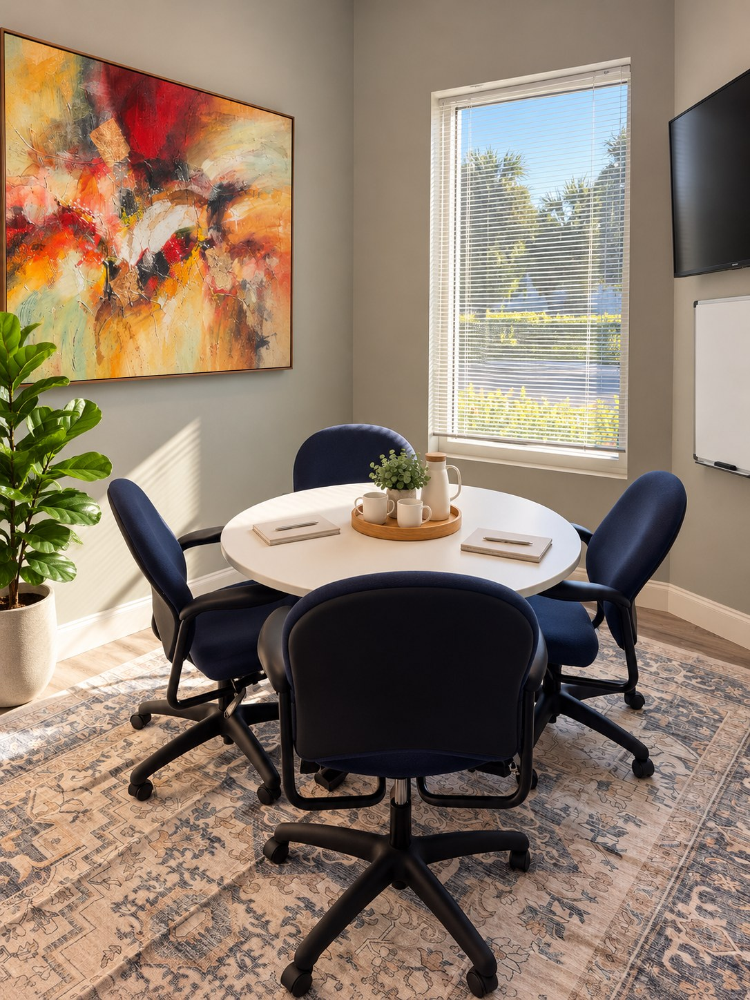
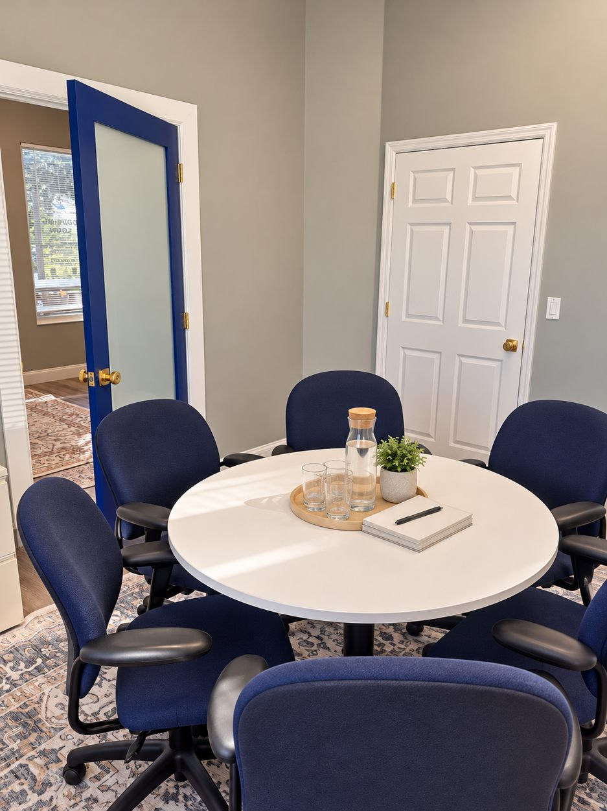

Client meetings & interviews
A private setting for consultations, interviews, presentations and focused business conversations.
Hosted at Bonita Multi-Services · Introduced through Quick Notary Public · One shared space and reservation calendar.
Meet. Teach. Sign. Celebrate. Create. Reserve an intimate office setting at Oak Creek Crossing for your next client meeting, small training, signing ceremony, wedding or photography session.
$45/hour · 2-hour minimum
$165 full day · 6 AM–6 PM Eastern
Up to 6 people total · 7 days by confirmed reservation

A welcoming alternative to a noisy café or oversized venue, conveniently located for Bonita Springs, Estero and Naples. Every session is reviewed for fit, headcount, equipment and timing.
A private setting for consultations, interviews, presentations and focused business conversations.
Host a workshop, team planning session or one-to-one coaching session with guest Wi-Fi, a TV and a whiteboard.
Bring the parties together for a coordinated signing. Request a notary or witnesses separately; room rental alone does not include those services.
A simple indoor setting for a small ceremony. The couple, officiant, guests and vendors must all fit within the six-person limit. Officiant and other services are separate.
Request a compact setting for headshots, product photos, interviews or content creation. Confirm your equipment and layout first; cameras, lights, backdrops and soundproofing are not included.
Step away from a busy home or shared workspace for a few focused hours or a full reserved day.
$45 / hour
Two-hour minimum: $90. Choose your confirmed time between 6 AM and 6 PM Eastern.
Request hourly space$165 / day
Exclusive room use for the confirmed day, 6 AM–6 PM Eastern.
Request the full dayRates cover the room for up to six people total. Setup and packing take place within your reservation. Optional services, applicable taxes and any approved extra charges are itemized before payment.
Bring people together around the table, share a presentation, or arrange an approved layout for your creative session.
Guest Wi-Fi, a TV and a whiteboard are included. Ask about coffee, breakfast catering, printing and scanning. Professional services, photography gear, décor and catering are quoted separately.

Up to six people total in the room, including the host, instructor, photographer, officiant, clients and guests. We confirm the layout and suitability before accepting your use.
Exclusive use of the room for the confirmed time, guest Wi-Fi, a presentation TV and whiteboard. Setup and pack-down must fit inside the reserved period. Confirm any connection or accessibility needs before payment.
Yes, request a photography or content session. This is a multipurpose office setting, not an equipped production studio. Share your shot list, gear and layout needs so we can confirm fit. Bring your approved photography equipment.
No. Room rental, notarial acts, witnesses, officiant services, license assistance, photography, décor and catering are distinct items. Ask for an itemized combined quote; the same service is not automatically charged twice.
Ask as early as possible, especially for weekends, ceremonies and sessions needing extras. A routine request may need 1–2 business days for review; this is a planning estimate. Same-day requests are subject to confirmation.
An inquiry or an open calendar slot does not confirm your booking. BMS verifies suitability, access, the itemized price and payment. Your confirmation should state the reserved time and any deposit, cancellation, rescheduling and refund terms before payment.
No. This is a short-term room reservation. Overnight use, a lease, mail handling, registered office and business-address services are not included.
Quick Notary Public introduces this office-space option at Bonita Multi-Services. To check the shared calendar and request your reservation, continue to the BMS room-booking page.
Your room request is handled by BMS. Request any QNP notary, signing or ceremony services separately, or ask for one itemized combined quote.
Check dates & request your spaceBonita Multi-Services LLC
11100 Bonita Beach Road, Unit 108-B-1 & 2
Bonita Springs, FL 34135
Room access: 7 days, 6 AM–6 PM Eastern, by confirmed reservation. Regular service-office hours are separate.